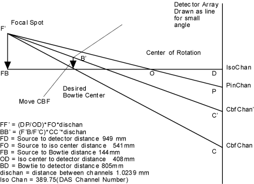

Illustration 1: Geometry for CBF/ISO Adjustment

The scans required for ISO are the following:
Air scans:
80 kV/40 mA/ 4x500 FET Setting/4x500 aperture /4 sec/small spot/air filter/ rotating
80 kV/40 mA/ 4x500 FET Setting/4x500 aperture/4 sec/large spot/air filter/ rotating
Pin scans:
80 kV/40 mA/ 4x500 FET Setting/4x500 aperture/4 sec/small spot/air filter/ rotating
80 kV/40 mA/ 4x500 FET Setting/4x500 aperture/4 sec/large pot/air filter/ rotating.
For all above ISO/CBF scans, DAS gain should be set to its default level for that technique. After the scans are taken, the following computational steps should be carried out:
Normalize scan data 3 & 4 using air scans 1 and 2 respectively.
Compute centroid using data from scans 3 and 4 and average over all rows.
Average the two numbers obtained in step 2 for large and small spots. This is our average centroid value.
If the average value is at DAS Channel 389.75 ±.02 channels, the adjustment is done. Else move the tube by the following: move = (average value - IsoChan) *dischan* (FO/OD) mm
Where: IsoChan = 389.75
Dischan = channel to channel distance 1.0239 mm
FO = source to iso center distance 541 mm
OD = Iso center to detector distance 408 mm
Take scans 3 and 4 and repeat centroid computation. Please note that if the computed ISO channel is out more than 1 channel, all four scans must be taken for each successive iteration.
Please note that the ISO values for small and large focal spots must be saved for use by the reconstruction process.